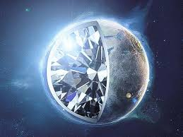

SPACETASTIC
SPACE IS
DIAMOND RAIN
HOW DIAMONDS ARE FORMED?
Before knowing how diamond rains or how planets are made up of diamond, you must know how diamonds are formed. On Earth, diamonds are formed deep inside, 200km and below. Due to the very very high pressure and intense heat below the surface, the carbon present deep inside turns into diamond. By this process diamonds are formed. The required pressure to turn carbon into diamond is about 4,999,000,000 pascals (four billion nine hundred ninety million),and the required temperature is 2,200o Fahrenheit but they take over 3,000,000,000 (3 billion) years to form and the age of our Earth is approximately 4 billion years. But this time can vary in different conditions. There is a mis-conception that diamond is very rare on Earth, it is more than common, instead there are lots and lots of diamonds, over 4 quadrillion (4,000,000,000,000,000) tonnes! If these all diamonds are distributed equally among all the people, then every body could be a billionare!.
HOW IT RAINS?
Since we know that diamonds are formed when very high pressure and heat acts on carbon. The planets like Jupiter, Saturn, Uranus and Neptune, are very big, so there atmosphere is also very big and due to the big atmosphere, very large atmospheric pressure is generated which is almost equal to the pressure inside the Earth, so it is sufficient to crystallise carbon into diamond and fall as rain and the internal heat is also sufficient to turn diamond into carbon vapours, so this cycle continiues and the diamond rains happens. Not only it rains diamonds but it also rains methane, and other elements. This diamond rain is very common in very big gas giants.
DIAMOND RAIN
HOW PLANETS ARE MADE UP OF DIAMOND
Diamond rain is easily found, but diamond planets are hardly found. Till now only one diamond planet is discovered, that is, '55 cancri e', it's host star name is '55 cancri A'. It's surface temperature is about 4,500o celcius. It is also formed in the same manner as a diamond is made, you can think of it as a large diamond which is almost twice the size of Earth. It's estimated price is $26,000,000,000,000,000,000,000,000,000,000 (26 nonillion) !
Hope you like the artilce please comment below!!